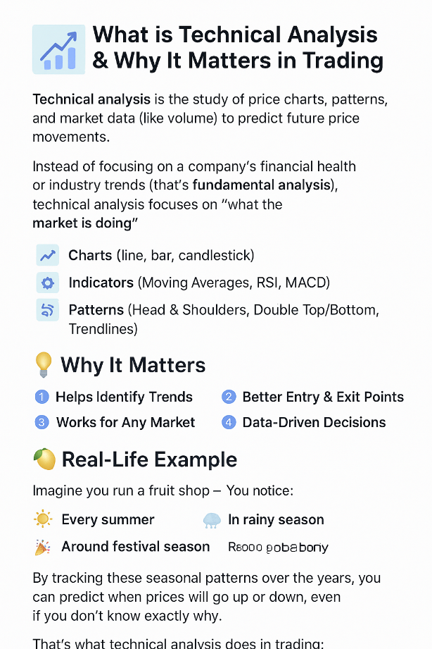

Technical Analysis Mastery
Decode market movements and trade with confidence.
1. Introduction to Technical Analysis
What is technical analysis & why it matters
Technical analysis is a trading discipline used to evaluate investments and identify trading opportunities
Technical analysis is the study of 📈 price charts, 🔍 patterns, and 📊 market data (like volume) to predict future price movements. Instead of focusing on a company's financial health or industry trends (that's fundamental analysis 🏦), technical analysis focuses on "what the market is doing" right now.
- 📉 Charts (line, bar, candlestick)
- ⚙️ Indicators (Moving Averages, RSI, MACD)
- 🌀 Patterns (Head & Shoulders, Double Top/Bottom, Trendlines)
💡 Why It Matters
- 🚀 Helps Identify Trends – Spot whether the market is going up, down, or sideways.
- 🎯 Better Entry & Exit Points – Know when to buy and when to sell.
- 🌍 Works for Any Market – Stocks, forex, crypto, commodities.
- 🧠 Data-Driven Decisions – Reduce emotional trading by relying on signals.
🍋 Real-Life Example
Imagine you run a fruit shop 🛒. You notice:
- ☀️ Every summer, the price of mangoes rises.
- 🌧️ In rainy season, prices drop.
- 🎉 Around festival season, prices peak sharply.
By tracking these seasonal patterns over the years 📅, you can predict when prices will go up or down — even if you don’t know exactly why.
That’s what technical analysis does in trading: it looks at past price behavior to make better predictions for the future 📆.
- Difference between technical and fundamental analysis
- Understanding market psychology and price action
2. Chart Types & Timeframes
- Line, bar, and candlestick charts
- Intraday, swing, and positional trading timeframes
- Choosing the right timeframe for your strategy
3. Trend Analysis
- Identifying uptrends, downtrends, and sideways markets
- Trendlines & channels
- Multi-timeframe trend confirmation
4. Support & Resistance
- Concept & importance
- Horizontal vs dynamic support/resistance
- How to trade breakouts and reversals
5. Candlestick Patterns
- Single patterns: Doji, Hammer, Shooting Star, Marubozu
- Multi-candle patterns: Engulfing, Harami, Morning/Evening Star
- Using patterns with confirmation signals
6. Technical Indicators
- Moving Averages (SMA, EMA, WMA)
- RSI & MACD
- Bollinger Bands & VWAP
- Combining indicators for better accuracy
7. Chart Patterns
- Continuation: Flags, Pennants, Triangles
- Reversal: Head & Shoulders, Double Top/Bottom, Rounding Bottom
- Setting entry & exit targets
8. Volume Analysis
- Why volume matters
- On-Balance Volume (OBV)
- Volume confirmation for breakouts
9. Risk Management
- Stop-loss & take-profit levels
- Risk-to-reward ratio
- Position sizing strategies
10. Trading Psychology
- Avoiding emotional trading
- Building discipline
- Journaling trades for improvement
11. Live Chart Practice
- Reading real market charts
- Practicing with TradingView
- Step-by-step trade setups